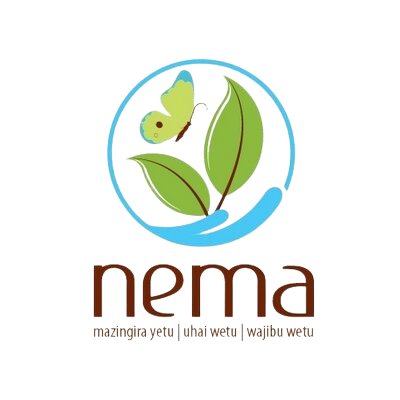
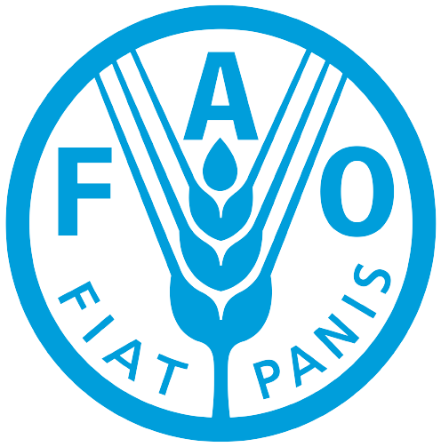
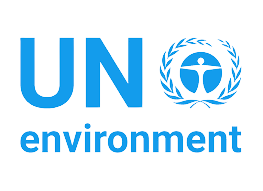

KENYA RED CROSS
KENYA RED CROSS
The Kenya Red Cross is a humanitarian Organization that aims to promote sustainability ,
health, wellbeing and resilience of communities.It provides relief services during emergencies,
crisis and pandemics. It implements programmes that aim to lessen or transfer the adverse effects
of hazards through preparedness, mitigation and response.
NATIONAL ENVIRONMENTAL MANAGEMENT AUTHORIRY
The National Environmental Management Authority(NEMA) is a national entity, which was established in 2002 with the
objectives of supervising and coordinating environmental activities and serving as the main national bodyto implememt
environmental policie in all sectors within the country. It is mandated to write and enforce laws and regulations for
environmental management, to educate the public about the nation's environmental issues and to control and prevent pollution,
as well as conserve natural resources.
 FOOD AND AGRICULTURE ORGANIZATION
The Food and Agriculture Organization(FAO) is an internationl organization that leads international efforts to defeat hunger and
improve nutrition and food security. Its motto is "let therebe bread." I t was founded in on 16 October 1945 with main aim of cubbing hunger
and promoting good health through nutrition. It plays a major role in climate change since it is involved in coming up and implementing ways
of dealing with climate change and its adverse effects.

UNITED NATION ENVIRONMENTAL PROGRAMME
UNEP's mission is to provide leadership and encourage patnerships in caring for the environment by inspiring,
informing, and enabling nations and people to improve their quality of life without compromising that of the
future generations. It works on delivering transformational change for people and nature by drilling down on the root causes
of the three planetary crisis of climate change, nature and biodiversity loss, pollution and waste.